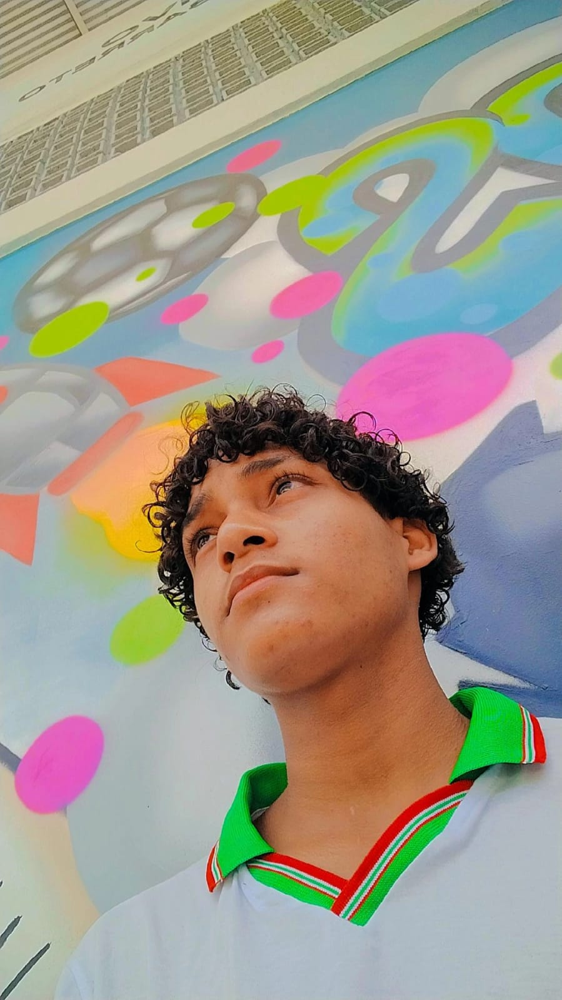

JOSÉ TÁSSIO DOS SANTOS SILVA
Educação / Escola
Atualmente curso o 1º Ano do Ensino Médio.
Faço o curso técnico de Desenvolvimento de Sistemas no IFAL.
Campus: Maceió.
O que eu estou aprendendo
No momento estou focado em aprender HTML e CSS para criar sites, e começando a ver lógica com JavaScript.
Conhecimentos Técnicos
- basico de Lógica de programação e algoritmos
- basico de Criação de sites com HTML5 e CSS3
- Introdução ao JavaScript
- Ambiente de desenvolvimento (VS Code e Node.js)
- Noções de Hardware e Redes
- Organização e estruturação de projetos
Um pouco sobre mim
No meu tempo livre, eu gosto muito de praticar esportes, principalmente vôlei e fazer treinos de calistenia . Também sou bastante ligado em jogos, curto passar o tempo no Free Fire, Roblox e Fortnite.
Além disso, tenho interesse em aprender novas línguas e estou estudando para ficar fera no inglês. Gosto de ler sobre tecnologia e investimentos, pois meu objetivo é evoluir na carreira de programação e conquistar minha independência.
Meus Dados
Tenho 16 anos
data de nascimento 19/07/2009
moro em paripueira
Sobre o meu curso
O curso técnico em Desenvolvimento de Sistemas no IFAL prepara o aluno para criar programas, sites e aplicativos. A gente aprende desde a lógica até como colocar um sistema para funcionar de verdade.
Para saber mais detalhes sobre as matérias e o campus, você pode acessar o site oficial:
Site Oficial do IFAL - Campus MaceióContatos
Meu e-mail pessoal: tassiosantos9090@gmail.com

Instagram: @eu_tassi0